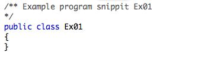
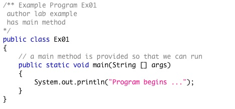

In these 2 hours you will be introduced to the software and equipment in the lab and the support staff. Lab sessions are 'must attend' concentrating on exercises that are designed to instruct good programming and debugging techniques. Each week the lab exercises help you build the skills that assist you not only to complete the current assignment, but also to be for successful in the course.
Record or memorize this web address: http://connex.csc.uvic.ca/
Those who have activated their CSc accounts should be able to login. Those registered in the course should see a tab for that course. We will deliver all web content in this course through this site.
Attendance will be taken by your lab TA for participation and in-lab exercise completion.
Configuration support documents and links are available on the main lab page (http://www.csc.uvic.ca/~labspg) under References. A specific guide to installation and testing of java on both PCs and Macs are available at:
http://www.csc.uvic.ca/~labspg/Reference/PytoJava/use_java_PC.html
http://www.csc.uvic.ca/~labspg/Reference/PytoJava/use_java_Mac.html
A tour of your computer's directory...
- Where are the programs you will use and where you will be saving your files. Every time you log into a CSc lab machine a permanent directory is mounted from a server. This appears to you as a local disk space designated the H: drive. Files stored to your H: drive will be available to you no matter where you log in in ECS. Files left on your desktop or on someplace else on the C: drive are often scrubbed and will not be there the following day.
- An efficient way to work, is to work in a folder on the desktop and drag the good copies to your H: drive periodically and certainly before you leave. That's like having your own archive. It is also a good idea to organize your code into sub-folders, so it does not pile up in one enormous 'labs' folder.
- Submitting assignments in Connex (Demo).
- We log a temporary account into Connex
- We select the Assignments tool on the left
- Below the link to the assignment there is an add attachments button. Select that.
- Browse for the files you would like to submit adding each as an attachments.
- When that is done hit continue. Forgetting to continue until confirmation is the most common reason for files thought to be submitted but not actually there.
Your first Java program (the program shell)...
- Launch TextPad (or JEdit)
- Saving a Java file -- where does it go??
- Opening and navigating at the command prompt
- Compiling/Running a Java program at the command prompt using Example 1 & Example 2 below
JEdit is a very usable program editor that you can download for free and use at home. The 'Command Prompt' is available to all PC's
Ex 1 Compiling:
Type in:

It is necessary to save this fragment in a plain text file named Ex01.java (The file name must match the class name exactly including case, and the file extension must be .java. Note that the third character in the name is a zero.). While it is not necessary, we recommend that you save it on the H: Drive, in a folder labelled CSC110, in a sub folder labelled lab_1. You will find that this extra level of organization will serve you well. Do not embed spaces in filenames (makes navigating with command prompt a pain).
To compile the java 'source code' which we just saved, open up a command prompt window and navigate to the folder where Ex01.java was saved. You can get a command line view of it by typing dir when you navigate there.
To avoid having to navigate in the Command Prompt window each time you make a new folder, you can: make a copy of the Command Prompt shortcut and paste it in the same directory/folder where you put your program. Right click on your Command Prompt copy and select properties. Locate the Starts In box and remove the path in that box. Apply your changes and close the Command Prompt shortcut. When you open up this copy of the Command Prompt shortcut it opens where ever it is placed. Very convenient, very fast.
Another way that can get you a command prompt window in your current directory is to hold the Shift key and right click in your directory. There should be an option in the menu to open a command prompt window in that directory. Even faster.
Now type the command that invokes the compiler and point it at the file Ex01.java:
javac Ex01.java
The command javac Ex01.java is sent to the operating system. If JDK is properly installed and the path to the application is set for your system then the javac.exe program is launched and it is given the name of the file that it should operate upon.
If there are any errors, fix them and recompile, ensuring there are no more errors. Examine the directory where you have stored Ex01.java. There should be a new file named Ex01.class. This file will be used by the Java Virtual Machine at run time. We will not run yet. You can try it, but there is no main method to run.
Ex 2 Running the program:
Add a main method to the Ex01 class so that the program can be run as well as compiled.

Save and compile until free of compilation errors.
Run the program above by issuing the command:
java Ex01
The command java Ex01 is sent to the operating system. If JDK is properly installed and the path to the application is set for your system then the java.exe program is launched and it is given the name of the file that it should operate upon. In this case the compiled file's name is Ex01.class. Note that we do not include the .class when we use the java application to run the progra
Ex 3 More Printing and some expressions:
Your TA will show you a few additional lines to put in your program, printing frequently so that you can see the effect of your code. Good ideas are arithmetic expressions, repeated operations on the same variable to show you how a variable can be updated using itself as part of the expression. a = a +1 ... print ... a = a*a ... print and so on. We should have a look at the mod operator (%) too.
Something to continue with is some ASCII art, to practice escape characters. Anything except the dog from assignment one is fine.
Ex 4 Ints and Doubles:
a)
Download the FunWithNumbers.java program.
Test the FunWithNumbers program shell by compiling and running. Whenever you are given code you should see if it: a) compiles and b) runs. Sometimes if you drag on code in a browser window you will pick up invisible characters which will defeat the compiler. You should always save the linked file to your desktop rather than dragging code from a browser window.
b)
Silent programs are not good. Put in a line that will print "Program begins" to the screen.
c)
Put in a java statements:
int answer1 = 3 / 2;
double answer2 = 3 / 2;
double answer3 = 3.0 / 2;
System.out.println(answer1 + " " + answer2 + " " + answer3 + " " );
Compile and run
Which was the expected answer? Explain.
d)
Put in the java statements:
double num1 = 3.0;
int num2 = 2;
double answer4 = num1 / num2;
System.out.println("answer 4 is " + answer4);
Which was the expected answer? Explain.
e)
Try one more statement:
int answer5 = num1 / num2;
This fails to compile. Fix it or remove it.
f)
On a new line assign num2 a new value that is double it's current value and then on a new line repeat the calculation of answer4, then print it. Was it what you expected?
g)
Use the final output from this exercise to get the TA to show you how to capture output from the Command Prompt window and paste it into your program as a comment. (Right click the command window, select "Mark", select the text in the prompt window and it will be copied.)
Discussion:
Ex 5 Find the error:
Debugging
The links below have code with bugs; error(s) have been introduced. Visually trace each to see if you can first spot the error. Later you can compile to see what the compiler indicates. If the compiler has no complaints determine if there is a runtime error or a logical error.
In the beginning of this course, you should practice typing in your program shells without looking at reference material until you can type a program shell from memory. Later you can apply that same technique to method stubs and eventually to rudimentary classes.This term our mantra will be: We do not code that which we do not understand.
Writing code or typing code is coding. To demonstrate our understanding to someone else we must first be able to describe our proposed solution in words, picture, glyps, circles and arrows or some combination of all of these, before we code. For debugging a TA will not look at code until given a description of the problem and a desired outcome. TA's will not listen while the student is looking at a screen.